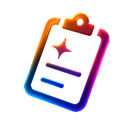
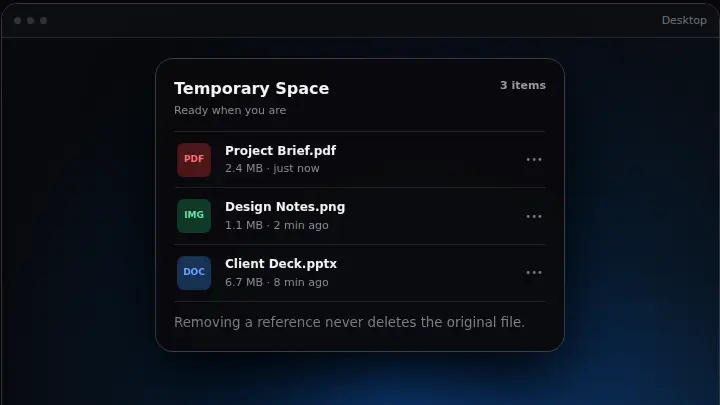

Choose your translation.
Choose Simplified Chinese or English as the lyric translation target, independently of the interface language. A translation already supplied by your lyric provider takes priority; local AI fills in when one is missing.
A temporary space for Windows—right at the top of your screen.
Latest Stable · {{STABLE_TAG}}

DropSpace 301 / TEMPORARY SPACE
DropSpace keeps file and folder references at your fingertips without moving or duplicating the originals. Your files stay exactly where you left them.
PProject Brief.pdf Today
IDesign Notes.png Today
DClient Deck.pptx Yesterday
02 / TOP-SCREEN ACCESS
The Dynamic Island stays out of the way, then moves fluidly through Compact, Drop Ready, and Expanded as your files need it.
03 / NATIVE ISLAND
Widgets, music, files and clipboard. Four distinct pages, one familiar place at the top of your screen.
Your everyday essentials, a glance away.
Keep your music close without leaving your work.
A place for the files you need next. Originals stay in place.
Recent copied content, separate from your staged files.
Interactive website illustration · sample content, not a live desktop
05 / MUSIC
Control playback, follow lyrics and see audio levels in the Island. Open the dedicated Music page when you want more room.
Lyrics and audio visualization depend on your player. When playback timing is unavailable, estimated lyric progress may be out of sync.
06 / AI LYRICS
Original lyrics, with a translation into Simplified Chinese or English. Choose the translation target separately from your interface language.
Let the busy world go by.
A little room to breathe.
留一点空间，自在呼吸。
Keep this moment close.
Music · light follows the sample rhythm
Interactive illustration with original sample lyrics and music. Translation shown as an example; audio starts only when you press play.
Choose Simplified Chinese or English as the lyric translation target, independently of the interface language. A translation already supplied by your lyric provider takes priority; local AI fills in when one is missing.
AI lyrics is off by default. Download the local model only when you choose. After setup, translation runs on your device with available lyrics. Fetching lyrics and downloading the model still need a connection.
Turn the glow off, show it during AI work, or let it breathe with music. Soft orange, pink and blue light drifts beyond the Island while its shape stays still.
First-time translation can take several minutes. Language coverage and quality depend on the model, lyric source and song. AI can change meaning or omit details; the original lyrics stay available.
07 / CLIPBOARD HISTORY
Find copied text, links, images, files and folders. Pause recording when you need to, pin what matters, and search everything in one place.
AAA→AABA→ABA08 / DRAG & DROP
Explorer, Desktop, Compact, Expanded, or the main window—DropSpace meets the file where your workflow already is.
09 / PRODUCT PREVIEW
See how files move through your workspace. These website illustrations use sample content to show the flow.

10 / DOWNLOAD
Latest Stable · {{STABLE_TAG}}
{{STABLE_REQUIREMENTS}}
Release notes ↗SHA-256 checksums ↗11 / SYSTEM REQUIREMENTS
{{STABLE_REQUIREMENTS}}
Current Beta: 64-bit Windows build 20348 or later
Checking this device…
12 / KNOWN LIMITATIONS
Unsigned packages may trigger a SmartScreen warning. Windows Drop Tray can use the same top-edge gesture; Windows sharing integration requires a trusted package identity.
13 / VERIFY YOUR DOWNLOAD
Download only from the official GitHub Release. Compare the file's SHA-256 with SHA256SUMS.txt; a matching hash proves file integrity, but not publisher identity.
Verification guide14 / WHAT'S NEW
{{LATEST_CHANGE_DATE}}
15 / OPEN SOURCE
DropSpace is built in the open, with its code, decisions, privacy model and release history available to everyone.
Apache-2.0 · Copyright 2026 Airan Luo
16 / FAQ
A local-first Windows workspace for temporarily holding file references and recent clipboard content, with a main window and a top-center Dynamic Island.
No. Temporary Space stores references. Adding or removing a reference does not move, copy, or delete the original file.
Yes. DropSpace can hold file and folder references through drag and drop or its picker.
A local history of captured text, URLs, images, files, and folders. You can search, pin, pause, clear, and apply retention limits.
The recommended per-user Installer adds Start Menu integration, an uninstaller, and in-place update support. Portable runs directly without installation; updates are notify/download-only.
{{STABLE_REQUIREMENTS}}
Current Beta: 64-bit Windows build 20348 or later
Windows may own the same top-edge drag gesture. DropSpace Settings links to the official Multitasking page; direct drops onto visible Compact and Expanded surfaces remain supported.
Clipboard history is stored locally. Update checks use public release metadata and official download endpoints. Sharing uses the connections you explicitly enable.
Stable receives Stable releases. Beta can receive Stable and Beta releases. DropSpace verifies download size and SHA-256. Installation options depend on the package; release notes explain any manual upgrade steps.